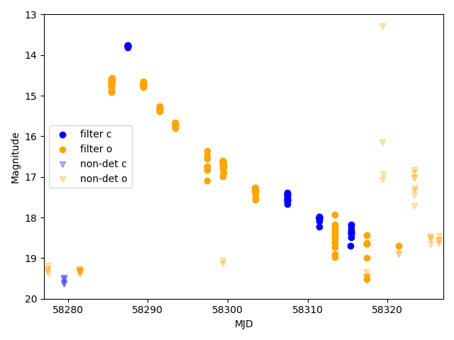

The Docs#
Set-up#
Install#
First you need to install the package, you can either use pip
pip install --user atlasapiclient
or clone the repository from github:
git clone git@github.com:HeloiseS/atlasapiclient.git
Config file#
The client requires a config ile that contains the base url of the ATLAS transient web servers and your token for the ATLAS API. In the directory atlasapiclient/config_files you will find the api_config_template.yaml file.
Copy it in the same directory to a file named api_config_MINE.yaml.
cd atlasapiclient/config_files
cp api_config_template.yaml api_config_MINE.yaml
Warning
As you’ll see below we don’t explicitely parse the config file because we assume you have named yours api_config_MINE.yaml.
The path to that file is encoded in the API_CONFIG_FILE variable in the atlasapiclient/utils.py file and parsed by default to the classes.
If you feel fancy and want to name your config file differently you have to keep track of its location and parse it with the argument api_config_file.
Update your token (if you don’t have a token see below)
Update the url to “https://psweb.mp.qub.ac.uk/sne/atlas4/api/”
How do I get a token?#
Once you have access to the web server you can get a token for API access by using the APIClient.refresh_token() method. This will generate a token for you and save it in the config file defined within the API_CONFIG_FILE variable in the atlasapiclient/utils.py file. For example:
from atlasapiclient import client as atlasapi
client = atlasapi.APIClient()
client.refresh_token()
This will work for any of the clients included in atlasapiclient.client. If your token is expired you can use the same method to refresh it.
Tip
How long will my token last? Depending on the level of access provided based on your request, we will issue tokens for 3 months, 6 months or 1 year. If your token expires you can use the refresh_token() method to get a new one, but if you have any issues with that please email us.
Quick Recipes#
Cone Search#
The cone search requires four parameters:
RA
Dec
Search radius in arcseconds
Request type: All, Nearest or Count (case insensitive)
from atlasapiclient import client as atlasapi
client = atlasapi.ConeSearch(payload={'ra': 150,
'dec': 60,
'radius': 60,
'requestType': 'nearest'},
get_response=True)
Data for a Single Object#
Get the data for a specific ATLAS ID#
from atlasapiclient import client as atlasapi
atlas_id = '1161600211221604900'
client = atlasapi.RequestSingleSourceData(atlas_id=atlas_id, get_response=True)
Tip
What is `get_response`? This argument just tells the function whether you want to make the request right away as soon as the RequestSingleSourceData object has been instanciated. Not doing this allows you to set up the object, check the payload that was created on instanciation, and then you can get the response by calling the get_response() method. If you don’t need to check the payload then it’s just easier to do it all in one swoop, but when debugging you don’t necessarily want to make API calls so we made it an opt-in situation.
Extract the Lightcurve from the JSON#
Your data can be found in the client.response_data attribute. Note that it is a list so if you only have one object you want to do client.response_data[0] to get the JSON data.
detections = pd.DataFrame(client.response_data[0]['lc'])
non_dets = pd.DataFrame(client.response_data[0]['lcnondets'])
Tip
Why is my response data in a list? This is standard for API response: here we’ve only asked for one object but if we had asked for 3, then each object would have their JSON data in an item of the list. Ensuring that the result type is consistent regardless of the number of objects is a good idea in general so you’re not mixing types depending on user requests. Remember: Even if you ask for only one object, you’ll be getting a list.
Make a Neat Plot#
import matplotlib.pyplot as plt
import pandas as pd
mjd_min, mjd_max= 58277, 58327
filter_colors = {'c': 'blue', 'o': 'orange'}
fig, ax = plt.subplots()
# Plot detections, colored by filter
for f in ['c', 'o']:
df = detections[detections['filter'] == f]
ax.scatter(df.mjd, df.mag, color=filter_colors[f], label=f'filter {f}')
# Plot non-detections with down arrows and lower alpha
for f in ['c', 'o']:
df = non_dets[non_dets['filter'] == f]
ax.scatter(
df.mjd, df.mag5sig,
color=filter_colors[f],
alpha=0.3,
marker='v', # down arrow
label=f'non-det {f}'
)
ax.set_xlim(mjd_min, mjd_max)
ax.set_ylim(20, 13)
ax.set_xlabel('MJD')
ax.set_ylabel('Magnitude')
ax.legend()
plt.show()
{kind=link}

AT 2018 cow lightcurve#
Get Data for Multiple objects#
If you want to query the ATLAS API for multiple objects you’re going to encounter the rate limit, which is 100 per query. To handle this, there is a class to chunk stuff for you:
from atlasapiclient import client as atlasapi
client = atlasapi.RequestMultipleSourceData(atlas_ids=YOUR_LIST_OF_IDS, mjdthreshold = LOWER_MJD_THRESHOLD)
client.chunk_get_response() # Chunks the list of IDs into a bunch of payloads and colates the responses.
You can then get the data just as you would for a single object.
Get IDs from a Custom or Followup List#
To get all the ATLAS IDs currently on one of the web server’s lists (e.g. eyeball, good, attic,
your own custom list, …) use RequestATLASIDsFromWebServerList:
from atlasapiclient import client as atlasapi
client = atlasapi.RequestATLASIDsFromWebServerList(list_name='eyeball')
client.atlas_id_list_str # list of ATLAS IDs as strings
See atlasapiclient.utils.dict_list_id for the full set of valid list_name values.
Filtering the list server-side
If you only need a subset of a list, you can narrow the request at the API level instead of fetching
everything and filtering client-side. This is both faster and lighter on the server, especially for
large lists like eyeball. The optional filter arguments are:
vra_gte/vra_lte– lower/upper bound on VRA scorerb_pix_gte/rb_pix_lte– lower/upper bound on RB Pix scorera_gte/ra_lte– lower/upper bound on RAdec_gte/dec_lte– lower/upper bound on Decsherlock_class– exact match on Sherlock classification. Valid values areORPHAN,SN,NT,VS,CV,BS,UNCLEAR,HPM– anything else raises an ATLASAPIClientArgumentWarningspec_type– exact match on spectroscopic classification
client = atlasapi.RequestATLASIDsFromWebServerList(
list_name='eyeball',
vra_gte=9.0,
dec_lte=10.0,
)
Tip
Can I exclude a value instead of matching it? No – sherlock_class and spec_type are
exact-match filters only, there is no “not equal to” option server-side. If your logic needs to
exclude one particular class (e.g. everything except 'ORPHAN') rather than match one, you’ll
still need to fetch the (now smaller, thanks to the other filters) candidate set and do that check
client-side.
Data Structure and other bits of data#
The ATLAS API gives you back everything (or nearly). You can check out the json schema if you want to navigate the key structure and what they mean. If anything is not clear please add an issue to the GH. Here is a couple of handy recipes…
Getting the Sherlock crossmatches#
The first crossmatch (if any) is a merged entry which cherry picks the best information from all catalogues (so if a galaxy has info in 3 catalogues it will be cross matched 3 times and the info from these catalogues will appear as separate entries in our list of dictionaries - the first entry in the list will be the combination of all the best info in those 3 entries) The following entries are the individual crossmatches.
summary_crossmatch = client.response_data[0]['sherlock_crossmatches'][0]
Is that ATLAS_ID object in TNS?#
You can check the crossmatches using:
client.response_data[0]['tns_crossmatches']